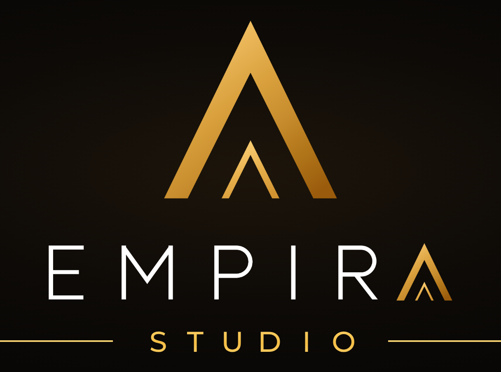

Proposition de vidéo · PRO-INTER
Vidéo motion design verticale, voix off, musique et bruitages sur mesure
La cible du « O » de votre logo prend vie : elle devient Pro, un petit personnage qui accompagne un intérimaire, de la recherche d'emploi jusqu'au terrain. En une seule histoire, la vidéo montre ce que PRO-INTER apporte à ses candidats.
Le déroulé de la vidéo
| Scène | Ce que l'on voit | La voix off | |
|---|---|---|---|
| 1 | Le logo prend vie | Votre logo se dessine à l'écran. La cible du « O » s'anime, saute hors du logo et devient Pro, qui dit bonjour. | « Voici Pro. Chez PRO-INTER, c'est lui qui vise juste. » |
| 2 | La recherche | Un candidat cherche une mission sur son téléphone. Des questions et des métiers tournent au-dessus de sa tête. | « Vous cherchez une mission qui vous correspond ? » |
| 3 | L'écoute | À l'agence, PRO-INTER écoute le candidat : ses compétences, son expérience et ses envies. Pro passe son CV au viseur. | « Nous écoutons vos compétences… et vos envies. » |
| 4 | Le bon poste | Le viseur parcourt vos offres d'emploi et se pose sur la mission adaptée. Intérim, CDD et CDI s'affichent. | « Puis notre viseur trouve la mission adaptée : intérim, CDD ou CDI. » |
| 5 | Sur le terrain | Le candidat est au travail sur un chantier de second œuvre. Les profils qualifiés (bâtiment second œuvre, industrie), puis les 6 secteurs : électricité, chauffage, menuiserie, serrurerie, métallerie, maintenance. | « Bâtiment second œuvre et industrie : des profils qualifiés. Électricité, chauffage, menuiserie, serrurerie, métallerie, maintenance : vous êtes sur le terrain. » |
| 6 | Le suivi | Pro passe sur le chantier. Une liste se coche : suivi régulier, réactivité, proximité. | « Et nous restons à vos côtés, du premier au dernier jour. » |
| 7 | Près de chez vous | La carte du Luxembourg met en avant votre agence d'Esch-sur-Alzette (17 rue de la Libération) et situe aussi Dudelange et Mondorf-les-Bains, avec « +20 ans ». | « Trois agences au Luxembourg, et plus de vingt ans d'expérience. » |
| 8 | Postulez | Pro replonge dans le logo, qui se reforme. Le bouton « Postulez sur prointer.lu » apparaît, avec l'adresse et le téléphone de l'agence d'Esch-sur-Alzette. | « PRO-INTER, votre agence d'emploi. Postulez sur prointer point lu. » |
Durée totale : entre 30 et 45 secondes, en une seule histoire sans coupure. Le rythme exact se cale sur la voix off et sur vos retours.
Document rédigé par un prestataire pour le compte d'Empira Studio.